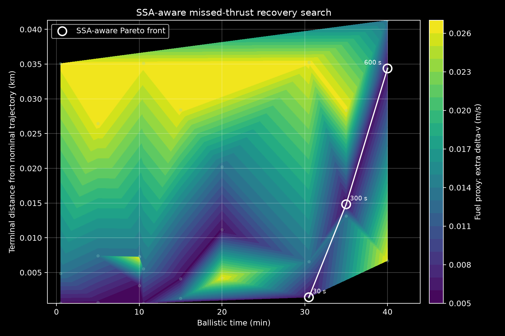

Mean motion-
Inclination-
Period-
Altitude band-
LEO conjunction-aware recovery workflow
Evaluate post-outage recovery choices against a nearby active-object catalog before selecting an operationally attractive return-to-nominal trajectory.
| Object | NORAD | Miss km | TCA min | Incl deg | Mean motion |
|---|
